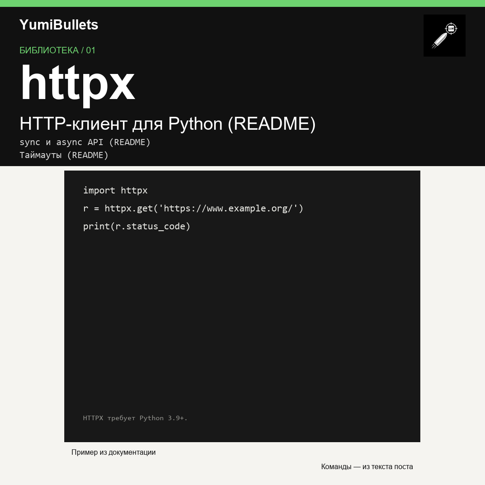

HTTPX: первый запрос и переход к асинхронному клиенту
Нужен первый HTTP-запрос из Python, а затем такой же запрос в асинхронном коде? Начните с трёх строк для HTTPX, проверьте ответ и переходите к AsyncClient. Возможности — по…

Нужен первый HTTP-запрос из Python, а затем такой же запрос в асинхронном коде? Начните с трёх строк для HTTPX, проверьте ответ и переходите к AsyncClient. Возможности — по…